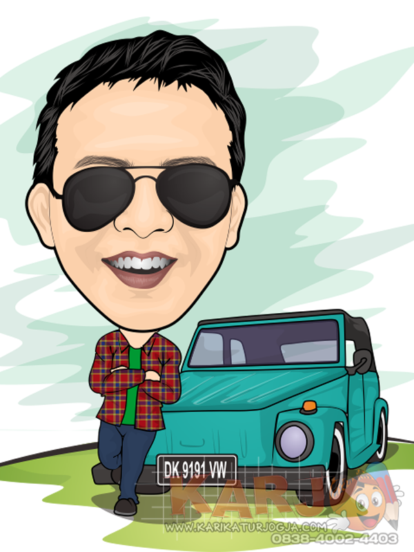

About
Saya adalah Mahasiswa Teknik Informatika, Fakultas Teknik Universitas Halu Oleo, Angkatan 2022.
Biodata
- Birthday: 12 August 2004
- Asal Sekolah: SMA NEGERI 2 KENDARI
- Phone: +62 858 2323 1272
- City: Kendari, Sulawesi Tenggara
- Age: 18
- Hobby: Playing Game
- Email: ikbalahbab2004@gmail.com
- Jurusan: Teknik Informatika
Skills
Theory
Sistem Operasi Windows
Microsoft Windows atau sering kita sebut dengan nama Windows merupakan sistem operasi yang dikembangkan oleh Microsoft, di mana Microsoft sendiri didirikan oleh Bill Gates dan Paul Allen. Sistem operasi ini dibangun dengan menggunakan antarmuka pengguna grafis (GUI) untuk menyederhanakan perintah.
Perkembangan Windows
- Windows 1.0
- Windows 2.0
- Windows 3.0
- Windows 3.1
- Windows NT
- Windows 95
- Windows 98
- Windows Edisi Milenium
- Windows 2000
- Windows XP
- Windows Vista
- Windows 7
- Windows 8
- Windows 10
- Windows 11
Fungsi Windows
- Menyediakan antarmuka antara pengguna dengan mesin.
- Mengkoordinasikan komponen yang ada pada perangkat keras.
- Menyediakan wadah supaya perangkat lunak berfungsi dengan selayaknya.
- Menyediakan struktur manajemen data.
- Memantau fungsionalitas sistem.
Kelebihan & kekurangan Windows
Kelebihan :
- Mudah digunakan
- Available software
- Dukungan untuk perangkat keras
- Fitur Plug & Play
Kekurangan :
- Kebutuhan sumber daya yang tinggi
- Harga tinggi
- Sumber tertutup
- Serangan virus
Aplikasi Perkantoran Pengolah Kata (Microsoft Word)
Microsoft Office Word atau Microsoft Word, merupakan sebuah perangkat lunak pengolah kata yang dikeluarkan oleh Microsoft. Ini adalah sebuah aplikasi pengolah kata yang dapat membantu dalam menyelesaikan kegiatan apa pun yang berkaitan dengan dokumen, teks dan sejenisnya.
Perkembangan Microsoft Word
- Word For Windows
- Word For Mac
- Microsoft Word 2010
- Microsoft Word 2013
- Microsoft Word Terbaru
Kelebihan & Kekurangan Microsoft Word
Kelebihan :
- Tampilan mudah dimengerti bahkan untuk pemula sekalipun.
- Terdapat fitur dasar yang berguna untuk menulis dan mengedit dokumen.
- Memiliki beberapa versi yang lebih upgrade daripada versi sebelumnya.
- Adanya menu Smartart yang memudahkan untuk memilih template dokumen.
- Adanya fitur Quick Access Toolbar yang mempermudah untuk mendapatkan fitur tersebut dengan mengklik ikon yang dimaksud.
Kekurangan :
- Dapat menyebabkan laptop atau PC menjadi lemot karena spesifikasinya yang berat.
- Pemasangan lisensi pada Ms Word membutuhkan waktu dan relatif sulit bagi orang yang tidak terbiasa.
- Pada Ms Word 2019, hanya bisa dipakai di Windows 8 dan 10.
- Untuk menginstal Ms Word membutuhkan kuota internet yang tidak sedikit karena ukurannya yang besar.
- Tab kontekstual dan style gallery yang ada terkesan sedikit mengganggu tampilan.
Aplikasi Perkantoran Pengolah Angka(Microsoft Excel)
Microsoft Excel adalah sebuah program atau aplikasi yang merupakan bagian dari paket instalasi Microsoft Office, berfungsi untuk mengolah angka menggunakan spreadsheet yang terdiri dari baris dan kolom untuk mengeksekusi perintah. Microsoft Excel telah menjadi software pengolah data / angka terbaik di dunia, selain itu Microsoft Excel telah didistribusikan secara multi-platform. Microsoft Excel tidak hanya tersedia dalam platform Power Point, Microsoft Excel juga tersedia di MacOS, Android dan Apple.
Kelebihan Dan Kekurangan Microsoft Excel
Kelebihan :
- User interface yang mudah untuk dipahami.
- Kompatibilitas dengan berbagai platform/sistem operasi.
- Mudah dipelajari untuk pengguna pemula.
- Mempunyai ekstensi (.xls) terpopuler untuk software spreadsheet .
- Dapat membaca ekstensi standar spreadsheet (.csv).
Kekurangan :
- Akses fungsi tertentu seperti fungsi statistik terbatas.
- Jumlah sel terbatas.
- Harga lisensi mahal
Aplikasi Perkantoran Pengolah Bahan Tayang
Aplikasi pengolah bahan tayang atau perangkat lunak presentasi adalah alat yang digunakan untuk membuat presentasi visual. Presentasi ini biasanya disampaikan dalam format tayangan slide, dan dapat dibuat dengan berbagai program. Program memungkinkan untuk menggabungkan elemen teks dan grafik untuk menyampaikan informasi penting kepada sekelompok orang sekaligus. Penggunaan umum untuk jenis perangkat lunak ini termasuk mengajarkan konsep baru atau kompleks kepada sekelompok siswa, mengumumkan peluncuran kampanye produk atau layanan baru kepada karyawan, melatih karyawan tentang konsep kunci atau kebijakan baru, atau mempresentasikan proposal ke grup.
Macam-macam Aplikasi Pengolah Bahan Tayang :
- Microsoft Power Point
- Open office Impress
- Kpresenter
- iWork KeyNote
- Canva
- Prezi
Google Slide
Google slides merupakan layanan presentasi online yang di miliki oleh Google serta bagian dari produk office Google Suite. Google slides diperkenalkan secara publik sejak 2006 melalui Google Drive-nya. Dalam Google Suite, tidak hanya Google slides yang tersedia secara gratis namun juga layanan Suite lainnya seperti Google Docs, Google Sheets, dan Google Forms. Semuanya juga tergabung dalam Google Workspace untuk kebutuhan bisnis seperti penyimpanan yang lebih besar serta akses platform lebih lengkap.
Kelebihan Dan Kekurangan Google Slide
Kelebihan :
- Berbasis cloud
- Fitur Kolaborasi
- Mudah digunakan pemula
- Gratis
Kekurangan :
- Harus menggunakan Gmail
- Pilihan efek sedikit
Desain Grafis
Desain grafis berasal dari dua kata, yaitu kata desain dan kata grafis. Desain adalah suatu metode perancangan estetika. Metode perancangan ini didasarkan pada kreativitas. Sedangkan grafis memiliki arti ilmu dari sebuah perancangan titik, maupun garis. Maka hal itu akan membentuk sebuah gambar, yang bisa memberikan informasi serta berhubungan dengan proses percetakan.
Maka bisa ditarik kesimpulan bahwa desain grafis adalah ilmu yang mengandalkan sebuah kreatifitas dalam menciptakan suatu rancangan yang berbentuk gambar. Tujuan akhirnya adalah sebagai kepentingan dari percetakan.
Perbedaan Vector & Bitmap
Vektor adalah gambar yang terbentuk melalui kombinasi titik dan garis dengan menggunakan rumus matematika tertentu. Dalam grafis vektor, rumus matematika digunakan untuk menentukan komposisi warna, tingkat ketebalan, serta posisi. Supaya ketika hasil gambarnya diperbesar tidak akan pecah atau terlihat kotak-kotak.
Bitmap adalah gambar yang tersusun berdasarkan titik serta kombinasi warna. Dalam grafis bitmap dihasilkan dari kumpulan titik atau piksel yang ditampilkan dalam layar komputer. Sehingga saat gambarnya diperbesar akan terlihat kotak-kotak atau bentuk pikselnya.
Jenis Digital Art
-
Vector Art
Vector Art merupakan gambar yang terbentuk dari sejumlah garis dan kurva. Ciri khas dari Vector Art adalah gambarnya yang terlihat seperti kartun tapi bentuknya nyata dan hampir mirip dengan bentuk aslinya. Aplikasi yang biasa digunakan untuk membuat seni digital ini yaitu Adobe illustrator, Corel-Draw, dan Adobe Photoshop.
Contoh :

-
WPAP
WPAP atau Wedha's Pop Art Potrait adalah suatu gugus seni ilustrasi potret wajah yang bersaling-silang secara geometri dengan penggunaan kontradiksi warna-warna khusus. Ciri khas dari WPAP adalah warnanya yang bebas namun masih terdapat unsur gelap terang. Aplikasi yang biasa digunakan untuk membuat seni digital ini yaitu Adobe illustrator, Corel-Draw, dan Adobe Photoshop
Contoh :

-
Karikatur
Nah kalo untuk karikatur pasti sudah banyak yang tahu kan? Gambar karikatur ini merupakan gambar tiruan dari sebuah objek (biasanya manusia) namun bagian kepalanya dibuat lebih besar daripada badannya.
Contoh :
 -
Line-Art
Line art adalah sebuah gambar ilustrasi yang terdiri atas garis tegas tanpa menggunakan gradasi warna. Biasanya hanya menggunakan warna hitam dan putih.
Contoh :

Desain Web
Website adalah kumpulan dari halaman-halaman situs yang terdapat dalam sebuah domain atau subdomain yang berada di dalam World Wide Web (WWW) di internet.
Hal yang Paling Utama dari Website :
- Layout atau tata letak
- white space atau ruang kosong
- pilihan font
- skema warna website
- desain navigasi
struktur Layout dari Website :
-
Elemen Header
Seperti namanya, merupakan elemen yang berisi judul dan penjelasan lain dokumen. Biasanya elemen ini diisikan dengan logo website, menu-menu global (seperti login dan logout), maupun nama halaman yang sedang ditampilkan.
-
Elemen Navigation
Elemen navigasi, yang memberikan akses navigasi ke halamanhalaman lain dalam web.
-
Sidebar
Elemen pendukung konten, dapat berupa pembantu navigasi konten, ataupun berbagai hal lain seperti daftar konten lain, iklan, atau menu tambahan. Sidebar dapat berada di kiri atau kanan konten, atau bahkan di kiri dan kanan konten, sesuai dengan kreatifitas perancangnya.
-
Elemen konten
Isi utama dari dokumen web. Pengguna biasanya datang ke web untuk melihat teks yang berada pada bagian ini.
-
Elemen Footer
Bagian penutup dari website, yang dapat saja berisi informasi lain tentang website, seperti lisensi pengunaan, sitemap, ataupun link ke website lain.
Quotes

Uzumaki Naruto
Aku harus percaya pada diriku sendiri, percaya bahwa aku adalah orang yang mereka percaya.